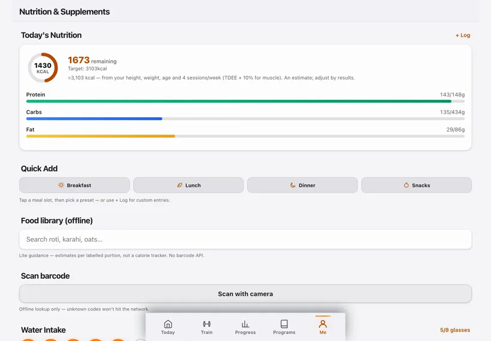

Illustrative story Illustrative story. People and data are fictional.
PulseCap · Karachi, Pakistan
How Sara logged her first consistent month
Sara trains in a basement gym with weak signal. Phone for the logger on the floor, iPad for My Plan on the bus, laptop for progress charts on Sundays.
“The basement has no signal. The log still works.”

Before and after
Illustrative numbers from a fictional week.
Before
After PulseCap
A day with Sara
-
Plan on the bus
On the bus Sara opens My Plan on her iPad and confirms today’s 3-day split before she even reaches the basement gym with the unreliable signal.
-
First warm-up set
Phone logger open on the first warm-up set — kilograms and reps save locally with no cloud spinner, which matters when the Wi-Fi dies mid-session.
-
Superset done
Still offline for the superset; the rest timer ticks on the phone while she watches the clock on the wall, not an app store login wall.
-
Sunday charts
Sunday evening she opens the laptop progress chart and smiles at three finished sessions — volume up gently, ego left outside.
-
Next week tweak
She nudges next week’s load on My Plan from the laptop, then closes the lid. The basement will still be offline. The log will still work.
Watch it
A day across devices — silent walkthrough with captions. No autoplay with sound.
Read transcript
Sara reviews My Plan on iPad, logs sets offline on iPhone, and checks progress on laptop. Fictional.
Features Sara uses
Illustrative story. People and data are fictional.